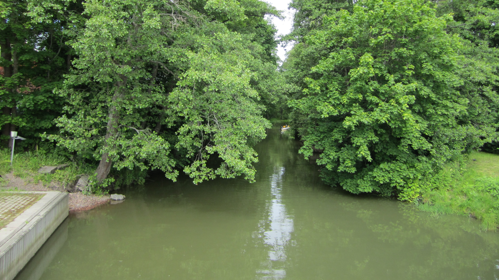

| Karis - Jorvas |
index |
A28 |

Ingå ? Alltså ingen å, tar en bild här på bron över ingen å på Ola Westmans allén. Kanske det ändå inte är en å utan en mycket smal vik med vatten som rinner uppströms under höst nätterna ? Världens definitivt första, ja kanske enda, "virtuella å". En jätte smal och högst egenartad vik, en virtuell vik som man kan paddla längs.
En mycket vacker, vad det nu sen är, så här i sommarskrud. Undrar är vattnet bräkt, alltså svagt saltigt, i 'våran' virtuella vik, man borde kanske smaka ?
Som av bilden syns tycks lokal befolkningen även kunna använda åtminstone utloppet av viken som farled för småbåtar. Kanske viken har ebb och flod som på de stora världshaven, man borde kanske fråga även om detta i "the Ingå Town Hall" ?
Ingå , på svenska, hur vore det med Ingo på engelska, something to really think about, you know ?
Månne någon har sett Ingå skräcken , det förskräckliga och ohyggliga odjuret som gömmer sig i vikar av denna typ. Klart är att vetenskapen definitivt är av den åsikt att något sådant definitivt inte förekommer och definitivt inte i Ingå. Men man kan ju ej vara helt säker om vi har här en ingen å . Men under grenarna på träden längs ..., vad det nu sen är, kan vad som helst gömma sig och som dyker upp endast när det är mörkt och ruggigt, ta vara på dig så att, vad det nu sen är, ej gör ... Vi önskar att ej läsa i 'blaskan' att ännu en föll offer för Ingå skräcken .